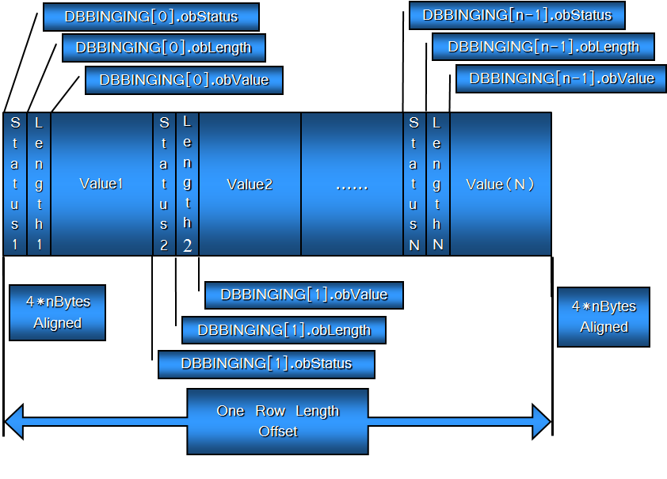

上次说到命令对象是用来执行SQL语句的。数据源在执行完SQL语句后会返回一个结果集对象，将SQL执行的结果返回到结果集对象中，应用程序在执行完SQL语句后，解析结果集对象中的结果，得到具体的结果，这次的主要内容是如何解析结果集对象并获取其中的值。
如何执行SQL语句
执行SQL语句一般的步骤如下：
- 创建ICommandText接口.
- 使用ICommandText接口的SetCommandText方法设置SQL命令
- 使用ICommandText接口的Excute方法执行SQL语句并接受返回的结果集对象，这个结果集对象一般是IRowset.
其实OLEDB并不一定非要传入SQL语句，他可以传入简单的命令，只要数据源能够识别，也就是说我们可以根据数据源的不同传入那些只有特定数据源才会支持的命令，已达到简化操作或者实现某些特定功能的目的.
针对有的SQL语句，我们并不是那么关心它返回了那些数据，比如说Delete语句，insert语句，针对这种情况我们可以将对应返回结果集的参数设置为NULL，比如像下面这样
1 | pICommandText->Execute(NULL, IID_NULL, NULL, NULL, NULL) |
明确告诉数据源程序不需要返回结果集，这样数据源不会准备结果集，减少了数据源的相关操作，从某种程度上减轻了数据源的负担。
设置command对象的属性
与之前数据源对象和会话对象的属性不同，command对象的属性是作用在返回的数据源对象上的，比如我们没有设置对应的更新属性，那么数据源就不允许我们使用结果集进行更新数据的操作。这些属性必须在执行SQL语句得到结果集的操作之前定义好。因为在获得数据源返回的结果集的时候数据源已经设置了对应的属性。
command对象的属性集ID是PROPSET_ROWSET.该属性集中有很多能够影响结果集对象的属性。
下面是一个执行SQL语句的例子:
1 | LPOLESTR lpSql = OLESTR("select * from aa26"); |
这段代码详细的展示了如何执行SQL语句获取结果集并设置COMMANDUI对象的属性。
结果集对象
结果集一般是执行完SQL语句后返回的一个代表二维结构化数组的对象。这个结构化对象可以理解为一个与数据表定义相同的一个结构体。而结果集中保存了这个结构体的指针
下面是结果集对象的详细定义
1 | CoType TRowset { |
结果集对象的一般用法
得到结果集后，它的使用步骤一般如下：
- 首先Query出IColumnsInfo接口
- 通过调用IColumnsInfo::GetColumnInfo方法得到关于结果集的列的详细信息DBCOLUMNINFO结构的数组,包括:列序号,列名,类型,字节长度,精度,比例等
- 通过该结构数组,准备一个对应的DBBINDING结构数组,并计算每行数据实际需要的缓冲大小,并填充结构DBBINDING。这个过程一般叫做绑定
- 利用DBBINDING数组和IAccessor::CreateAccessor方法创建一个数据访问器并得到句柄HACCESSOR
- 调用IRowset::GetNextRow遍历行指针到下一行,第一次调用就是指向第一行,并得到行句柄HROW，这个行句柄表示我们访问的当前是结果中的第几行，一般它的值是一个依次递增的整数
- 调用IRowset::GetData传入准备好的行缓冲内存指针,以及之前创建的访问器HACCESSOR句柄和HROW句柄。最终行数据就被放置到了指定的缓冲中。循环调用GetNextRow和GetData即可遍历整个二维结果集。
列信息的获取
取得结果集对象后,紧接着的操作一般就是获取结果集的结构信息,也就是获取结果集的列信息(有些材料中称为字段信息)要获取列信息,就需要QueryInterface出结果集对象的IColumnsInfo接口,并调用IColumnsInfo::GetColumnInfo方法获得一个称为DBCOLUMNINFO结构体的数组该结构体中反映了列的逻辑结构信息(抽象数据类型)和物理结构信息(内存需求大小等信息)
函数GetColumnInfo定义如下：
1 | HRESULT GetColumnInfo ( |
第一个参数表示总共有多少列，第二个参数是一个DBCOLUMNINFO，返回一个列信息的数组指针，第三个参数返回一个字符串指针，这个字符串中保存的是个列的名称，每个名称间以\0\0分割。但是我们一般不使用它来获取列名，我们一般使用DBCOLUMNINFO结构的pwszName成员。
DBCOLUMNINFO定义如下：
1 | typedef struct tagDBCOLUMNINFO { |
对于columnid成员，DBMS系统一般会有多个系统表来表示众多的信息，比如用户信息，数据库信息，数据表信息等等，其中针对每个表中的列的相关信息DBMS系统使用特定的系统表来存储，而查询这个系统表来获取列信息时使用的就是这个columnid值。
数据绑定
一般绑定需要两步，1是获取列信息的DBCOLUMNINFO结构，接着就是根据列信息来填充DBBINDING数据结构。
有的时候可能会觉得绑定好麻烦啊，还不如直接返回一个缓冲，将所有结果放入里面，应用程序根据需求自己去解析它，这样岂不是更方便。之所以需要绑定，有下面一个理由：
- 并不是所有的数据类型都能被应用程序支持，比如说数据库中的NUMBER类型在VC++中找不到对应的数据结构来支持。
- 有时一行数据并不能完全读取到内存中，比如说我们给的缓冲不够或者是数据库中的数据本身比较大，比如存储了一个视频文件等等。
- 在程序中并不是所有的访问器都是为了读取数据，而且使用返回所有结果的方式太简单粗暴了，比如我只想要一列的数据那个数据可能占用内存不足1K，但是数据库表中某一列数据特别大，可能占用内存会超过一个G，如果全都返回的话太浪费内存了。所以在绑定时候可以灵活的指定返回那些数据，返回数据长度是多少，针对特别大的数据，我们可以指定它只返回部分，比如只返回前面的1K
- 使用绑定可以灵活的安排返回数据在内存中的摆放形式。
绑定结构的定义如下:
1 | typedef struct tagDBBINDING |
参数的详细说明：
- obValue、obLength、obStatus：数据源在返回结果的时候一般会返回该列信息的三中数据，数据长度、数据状态、数据值。数据状态表示数据源在提供数据的一个状态信息，比如该列信息为空时它会返回一个DBSTATUS_S_ISNULL，列数据比较长，而提供的数据可能不够，这个时候会返回一个状态表示发生了截断。而数据长度表示返回结果的长度。这个值是返回的数据对应的字节长度，注意这里需要与前面ulColumnSize区分开来。三个数据在内存中摆放的顺序如下：

其中每列数据都是按照status length value结构排布，而不同的列的数据按照顺序依次向后排放，这个内存的布局有点像结构体数组在内存中的的布局方式。而绑定结构中的obValue、obLength、obStatus规定了它们三者在一块内存缓冲中的偏移，要注意后面一列的开始位置是在前面一列的结束位置而不是所有数据都是从0开始。 - dwPart：前面说数据源返回结果中有3个部分，但是我们可以指定数据源返回这3个部分的哪些部分，它的值是一些标志位，根据这些标志来决定需要返回哪些数据，不需要返回哪些数据.它的值主要有：DBPART_LENGTH、 DBPART_STATUS、DBPART_VALUE;
- dwMemOwner，这个值表示将使用何种内存缓冲来保存数据源返回的结果，我们一般使用DBMEMOWNER_CLIENTOWNED，表示使用用户自定义内存的方式，即这个缓冲需要自行准备。
- eParamIO：我们将返回的值做何种用途，DBPARAMIO_NOTPARAM表示不做特殊用途，DBPARAMIO_INPUT，作为输入值，一般在需要更新列数据的时候使用这个标志，DBPARAMIO_OUTPUT，作为输出值，这个输出时相对于数据源来说的，表示输出到应用程序程序缓冲，作为展示用。
- wType：将数据源中的原始数据做何种类型的转化，比如原来数据库中存储的是整数的123456，而这个值是DBTYPE_WSTR的话，数据源中的结果会被转化为字符串的”123456”，放入到缓冲中。
DBBINDING 与DBCOLUMNSINFO结构的比较
它们二者中有许多数据成员是相同的，表示的含义也基本相同，但是二者也有显著的区别： - DBCOLUMNINFO是数据提供者给使用者的信息，它是固定的，对相同的查询来说，列总是相同的，因此数据提供者返回的 DBCOLUMNINFO数组也是固定的.而DBBINDING是作为数据消费者创建之后给数据提供者的一个结构数组，它的内容则由调用者来完全控制，通过这个结构可以指定数据提供者最终将数据摆放成调用者指定的格式，并进行指定的数据类型转换.针对相同的查询我们可以指定不同的DBBINDINGS结构。
- DBCOLUMNINFO反映的是二维结果集的原始列结构信息而DBBINDING则反映的是二维结果集数据最终按要求摆放在内存中的样式
下面是一个针对绑定的列子：在使用前一个列子中的方法设置对应的属性并执行SQL语句后，得到一个结果集，然后调用对应的Query方法，得到一个pIColumnsInfo接口，接着调用接口的GetColumnsInfo方法，获取结构的具体信息。1
2
3
4
5
6
7
8
9
10
11
12
13
14
15
16
17
18
19
20
21
22
23
24
25
26
27
28
29
30
31
32
33
34
35
36
37
38
39
40
41
42
43
44
45
46
47
48
49
50
51
52
53
54
55
56
57
58
59
60
61
62
63
64
65
66
67
68
69
70
71
72
73
74
75
76
77
78
79
80
81
82
83
84
85
86
87
88
89
90
91
92
93
94
95
96
97
98
99
100
101
102
103
104
105
106
107
108
109
110
111ExecSql(pIOpenRowset, pIRowset);
//创建IColumnsInfo接口
HRESULT hRes = pIRowset->QueryInterface(IID_IColumnsInfo, (void**)&pIColumnsInfo);
COM_SUCCESS(hRes, _T("查询接口IComclumnsInfo,错误码:%08x\n"), hRes);
//获取结果集的详细信息
hRes = pIColumnsInfo->GetColumnInfo(&cClumns, &rgColumnInfo, &lpClumnsName);
COM_SUCCESS(hRes, _T("获取列信息失败,错误码:%08x\n"), hRes);
//绑定
pDBBindings = (DBBINDING*)MALLOC(sizeof(DBBINDING) * cClumns);
for (int iRow = 0; iRow < cClumns; iRow++)
{
pDBBindings[iRow].bPrecision = rgColumnInfo[iRow].bPrecision;
pDBBindings[iRow].bScale = rgColumnInfo[iRow].bScale;
pDBBindings[iRow].cbMaxLen = rgColumnInfo[iRow].ulColumnSize * sizeof(WCHAR);
if (rgColumnInfo[iRow].wType == DBTYPE_I4)
{
//数据库中行政单位的长度最大为6位
pDBBindings[iRow].cbMaxLen = 7 * sizeof(WCHAR);
}
pDBBindings[iRow].dwMemOwner = DBMEMOWNER_CLIENTOWNED;
pDBBindings[iRow].dwPart = DBPART_LENGTH | DBPART_STATUS | DBPART_VALUE;
pDBBindings[iRow].eParamIO = DBPARAMIO_NOTPARAM;
pDBBindings[iRow].iOrdinal = rgColumnInfo[iRow].iOrdinal;
pDBBindings[iRow].obStatus = dwOffset;
pDBBindings[iRow].obLength = dwOffset + sizeof(DBSTATUS);
pDBBindings[iRow].obValue = dwOffset + sizeof(DBSTATUS) + sizeof(ULONG);
pDBBindings[iRow].wType = DBTYPE_WSTR;
dwOffset = dwOffset + sizeof(DBSTATUS) + sizeof(ULONG) + pDBBindings[iRow].cbMaxLen * sizeof(WCHAR);
dwOffset = COM_ROUNDUP(dwOffset); //进行内存对齐
}
//创建访问器
hRes = pIRowset->QueryInterface(IID_IAccessor, (void**)&pIAccessor);
COM_SUCCESS(hRes, _T("查询IAccessor接口失败错误码：%08x\n"), hRes);
hRes = pIAccessor->CreateAccessor(DBACCESSOR_ROWDATA, cClumns, pDBBindings, 0, &hAccessor, NULL);
COM_SUCCESS(hRes, _T("创建访问器失败错误码：%08x\n"), hRes);
//输出列名信息
DisplayColumnName(rgColumnInfo, cClumns);
//分配对应的内存
pData = MALLOC(dwOffset * cRows);
while (TRUE)
{
hRes = pIRowset->GetNextRows(DB_NULL_HCHAPTER, 0, cRows, &uRowsObtained, &phRows);
if (hRes != S_OK && uRowsObtained != 0)
{
break;
}
ZeroMemory(pData, dwOffset * cRows);
//显示数据
for (int i = 0; i < uRowsObtained; i++)
{
pCurrData = (BYTE*)pData + dwOffset * i;
pIRowset->GetData(phRows[i], hAccessor, pCurrData);
DisplayData(pDBBindings, cClumns, pCurrData);
}
//清理hRows
pIRowset->ReleaseRows(uRowsObtained, phRows, NULL, NULL, NULL);
CoTaskMemFree(phRows);
phRows = NULL;
}
//显示列名称
void DisplayColumnName(DBCOLUMNINFO *pdbColumnInfo, DBCOUNTITEM iDbCount)
{
COM_DECLARE_BUFFER();
for (int iColumn = 0; iColumn < iDbCount; iColumn++)
{
COM_CLEAR_BUFFER();
TCHAR wszColumnName[MAX_DISPLAY_SIZE + 1] =_T("");
size_t dwSize = 0;
StringCchLength(pdbColumnInfo[iColumn].pwszName, MAX_DISPLAY_SIZE, &dwSize);
dwSize = min(dwSize, MAX_DISPLAY_SIZE);
StringCchCopy(wszColumnName, MAX_DISPLAY_SIZE, pdbColumnInfo[iColumn].pwszName);
COM_PRINTF(wszColumnName);
COM_PRINTF(_T("\t"))
}
COM_PRINTF(_T("\n"));
}
//显示数据
void DisplayData(DBBINDING *pdbBindings, DBCOUNTITEM iDbColCnt, void *pData)
{
COM_DECLARE_BUFFER();
for (int i = 0; i < iDbColCnt; i++)
{
COM_CLEAR_BUFFER();
DBSTATUS status = *(DBSTATUS*)((PBYTE)pData + pdbBindings[i].obStatus);
ULONG uSize = (*(ULONG*)((PBYTE)pData + pdbBindings[i].obLength)) / sizeof(WCHAR);
PWSTR pCurr = (PWSTR)((PBYTE)pData + pdbBindings[i].obValue);
switch (status)
{
case DBSTATUS_S_OK:
case DBSTATUS_S_TRUNCATED:
COM_PRINTF(_T("%s\t"), pCurr);
break;
case DBSTATUS_S_ISNULL:
COM_PRINTF(_T("%s\t"), _T("(null)"));
break;
default:
break;
}
}
COM_PRINTF(_T("\n"));
}
最需要注意的是绑定部分的代码，根据返回的具体列数，我们定义了一个对应的绑定结构的数组，将每个赋值，赋值的时候定义了一个dwOffset结构来记录当前使用内存的情况，这样每次在循环执行一次后，它的位置永远在上一个列信息缓冲的尾部，这样我们可以很方便的进行偏移的计算。
绑定完成后这个dwOffset的值就是所有列使用的内存的总大小，因此在后面利用这个值分配一个对应长度的内存。然后循环调用GetNextRows、GetData方法依次获取每行、每列的数据。最后调用相应的函数来进行显示，至此就完成了数据的读取操作。
最后，我发现码云上的代码片段简直就是为保存平时例子代码而生的，所以后面的代码将不再在GitHub上更新了，而换到码云上面。
源代码查看